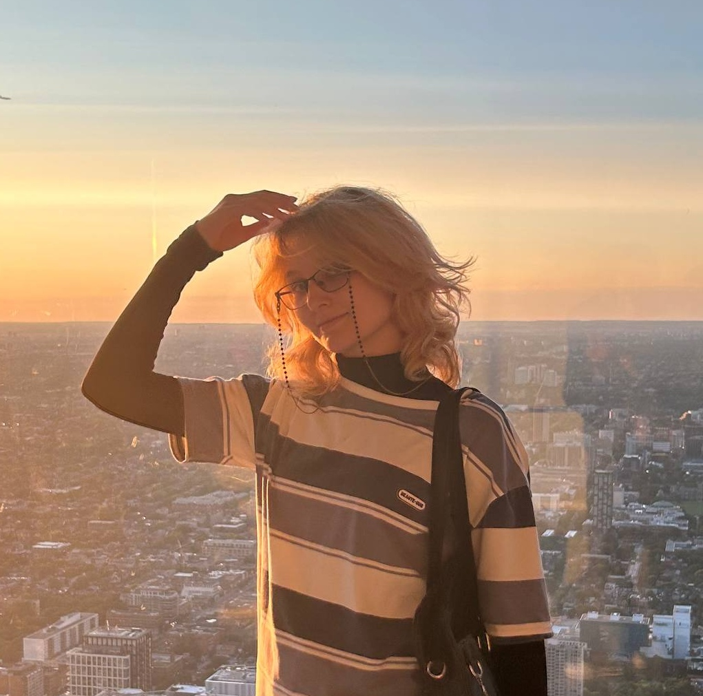
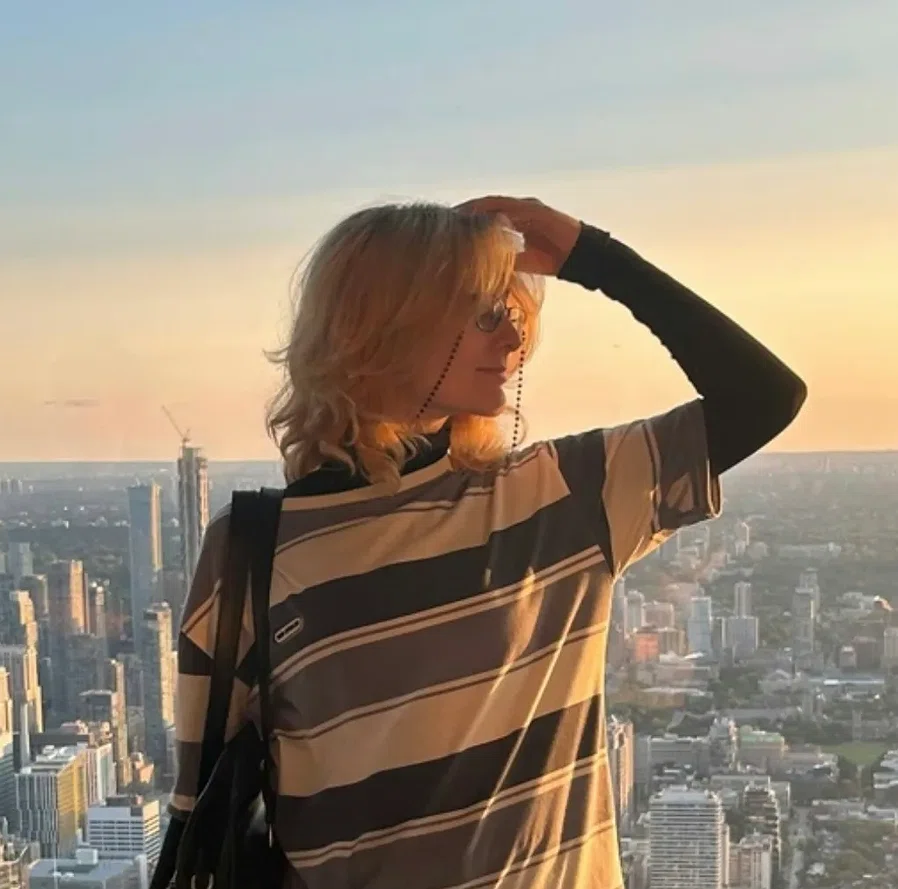
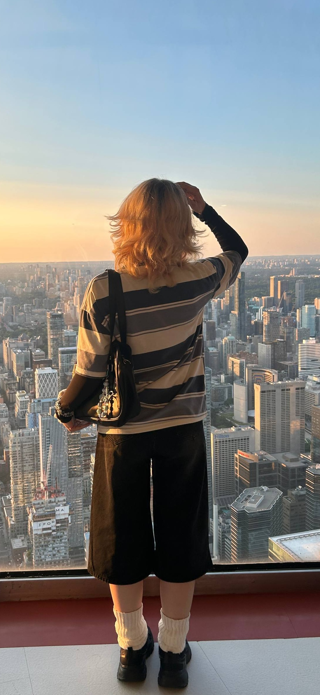

Студентка, которая учится работать с HTML
Мне 18 лет. Мой любимый цвет - голубой, светлый и темный. Мои глаза в основном серые, но есть оттенки голубого. Это меня очень радует. Мои любимые сочетания в одежде - это черный, голубой и серый. На фотографиях моя любимая футболка, которую я сильно ассоциирую с собой. Также я люблю пейзажи гор и морей, люблю туман, грозу и снег
У меня много разных увлечений. Я рисую, закончила художественную школу. Мне нравится рисовать в диджитал, используя кисть "карандаш". Мне нравится читать, любимые авторы - Шолохов, Гончаров, Замятин, Агата Кристи и Ремарк. Помимо этого в свободное время я играю в компьютерные игры, мои любимые это Hollow Knight: Silksong и Rusty Lake. Из интересного я коллекционирую фигурки pop mart, сейчас у меня их 15. Фан-факт - я хорошо катаюсь на лыжах и хочу заниматься боксом